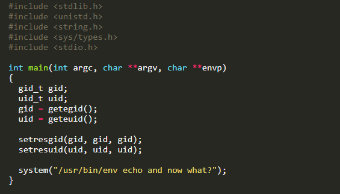
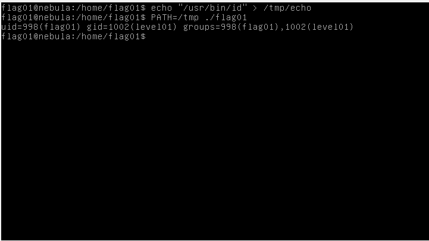

Em este desafio temos o seguinte código:

Neste desafio estive um pouco mais tempo á procura da vulnerabilidade mas como em quases todas as vulns esta acontence porque o utilizador consegue controlar o input ou manipulalo.
Portanto o que acontence é o que programa executa em um ambiente que nós controlamos.
Basicamente o programa usa a nossa variavel do nosso ambiente a PATH.
O programa ao executar o echo vai buscar ao PATH a localização do echo e executa o echo.Se nos pusermos outro PATH por exemplo /tmp e um ficheiro com o nome echo ele vai executar esse ficheiro que está nesse PATH e não o original !!!!!!!
ps: i love this tão bem pensado quase tenho orgasmo cerebral.
Sabendo a teoria vamos fazer na prática.

Temos de meter "/usr/bin/id" porque o PATH agr é /tmp.